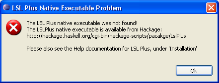

If you are reading this Help material, it is likely that you have already installed the LSL Plus Eclipse plugin. However, LSL Plus will not work properly unless the LSL Plus native executable (a.k.a. the Haskell Core) is also installed. If you do not have the native executable installed, you will get a warning window that looks something like:

There are several ways to get the native executable installed. The simplest way is to install it at the same time as you install the plugin, which you can do if the native executable is available pre-compiled for your platform.
When you install the plugin, via an update site, you may see a selection (from within the update manager) that looks something like:

The image shows the availability of a version of the plugin, and two different 'parts' specific to different platforms (in the example, macosx/x86 and win32/x86). Installing the both the plugin and the 'part' appropriate to your platform will get you fully up and running. If you install only the plugin, and then realize you need the extra 'part', you can install it after the plugin at any time.
If a precompiled executable is not available for your platform, you can compile it yourself, from source. Building LslPlus requires the installation of the Glasgow Haskell Compiler (GHC) version 6.10.1 or later, which is available from the GHC website. You can obtain the source distribution from the Hackage Repository, on the LslPlus page.
Once you have the source distribution, which is a tarball that has been compressed with gzip, and have extracted it to some directory, from within that directory, execute the following command:
runhaskell Setup.hs configure
You will probably be told that there are some libraries on which the package depends that are not installed. All of these other libraries, which aren't distributed by default with GHC, are available from the Hackage Repository. The following packages are known to be needed:
Each package is installed using the following sequence of commands:
runhaskell Setup.hs configure
runhaskell Setup.hs build
runhaskell Setup.hs install
Note: some packages may have a setup script called 'Setup.lhs' rather than 'Setup.hs'; you can check by looking in the directory after extracting the package from the tar file. Note also that there are options that can be set when running the configure step, such as where to install executables.
After all dependencies are resolved, LslPlus can be installed the same way:
runhaskell Setup.hs configure
runhaskell Setup.hs build
runhaskell Setup.hs install
The final step, 'install', will install the executable in the default location for GHC-built executables (e.g. /usr/local/bin). Wherever you install the executable, it must be on your (Windows/Linux/Macosx/etc.) PATH for the Eclipse plugin to find it). After you have successfully installed it, you can launch Eclipse and use all the features of the LSL Plus plugin.
If you have built the executable, but the Eclipse plugin still has trouble finding it, you can specify in the LSL Plus preferences page, from within Eclipse, precisely where to find it. The preferences page is part of the normal Eclipse preferences system (Window -> Preferences), and looks something like:

Once you have set the path to the LSL Plus executable, you need to restart Eclipse.